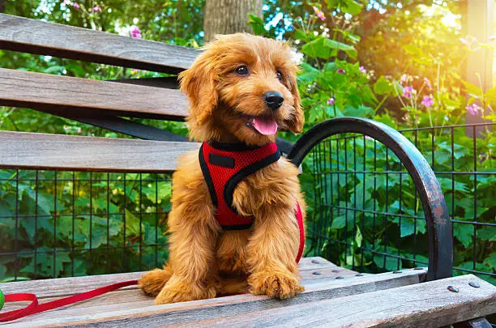
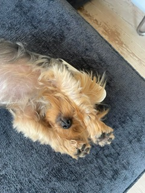

Röd sele - Small Dogs
Mjuk och justerbar sele som passar mindre hundraser samt valpar. Finns även i storlek XXS
299 kr
Allt för små tassar och stora personligheter
Små Tassar är en webbutik för dig som vill hitta fina och praktiska produkter som är anpassade för mindre hundraser.

Våra mest omtyckta produkter just nu - handplockade för små tassar och stora personligheter.

Mjuk och justerbar sele som passar mindre hundraser samt valpar. Finns även i storlek XXS
299 kr

Grönt tuggben i silikon som din hund kan tugga på länge
110 kr

Elegant och bekväm hundbädd designad för att ge maximal komfort med sitt mjuka material
699 kr
Mjuk och justerbar sele som passar mindre hundraser samt valpar. Finns även i storlek XXS
299 kr

En walk-in-sele från Evitas som är lätt att ta på och av
499 kr

Snyggt hundkoppel med super-grip fäste som gör det extra greppvänligt
350 kr

Mjuka pipleksaker i form av olika grönsaker som broccoli och morot
99 kr
Grönt tuggben i silikon som din hund kan tugga på länge
110 kr
Elegant och bekväm hundbädd designad för att ge maximal komfort med sitt mjuka material
699 kr
Små Tassar är en svensk webbutik för dig som lever tillsammans med en liten hund. Hos oss hittar du noggrant utvalda produkter för promenader, lek, vardag och vila. Vi fokuserar på produkter som kombinerar funktion, komfort och stil - anpassade för våra minsta fyrbenta familjemedlemmar.
Idén till Små Tassar föddes ur en enkel tanke: små hundar behöver produkter som är gjorda med deras storlek och behov i åtanke. När vi letade efter selar, leksaker, bäddar och andra tillbehör märkte vi att det inte alltid var lätt att hitta rätt storlek och kvalitet. Därför skapade vi Små Tassar - en butik där det ska vara enkelt att hitta fina och praktiska produkter för små hundar. Oavsett om det är dags för dagens promenad, en stunds lek eller en mysig vila vill vi hjälpa dig att hitta något som passar just din lilla vän.

Har du frågor om våra produkter eller behöver du hjälp att hitta rätt för din hund? Hör gärna av dig till oss!
När du skickar ett meddelande till oss använder vi de personuppgifter du lämnar för att kunna svara på din fråga. Läs mer i vår integritetspolicy.
När du kontaktar Små Tassar via vårt kontaktformulär kan vi samla in ditt namn, din e-postadress och informationen som du skriver i ditt meddelande.
Uppgifterna används endast för att kunna läsa och svara på ditt meddelande och hjälpa dig med din fråga.
Vi sparar endast uppgifterna så länge som det behövs för att hantera din fråga eller ditt ärende.
Har du frågor om hur dina personuppgifter behandlas är du välkommen att kontakta Små Tassar. Kontakta oss via vårt kontaktformulär
Detta är en övning och texten är inte juridisk rådgivning.